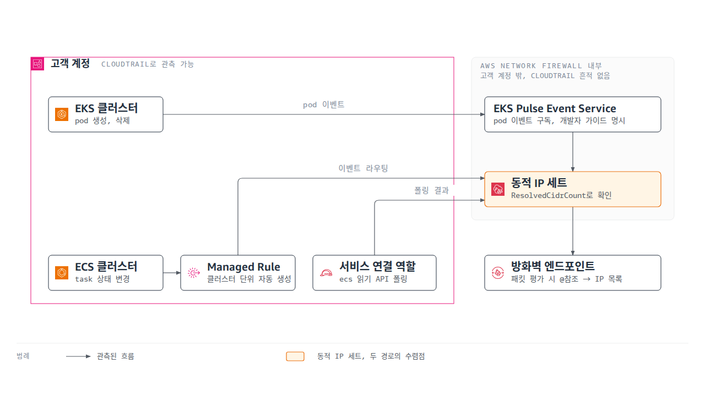
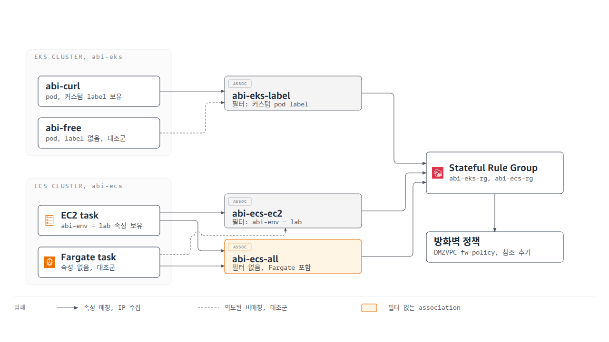

이 글은 컨테이너 속성 기반 규칙에서 커스텀 속성 필터를 사용할 수 있는지, IP를 어떤 경로로 수집하는지, 컨테이너 변화가 규칙에 반영되기까지 얼마나 걸리는지를 확인합니다. 커스텀 속성 필터는 EKS와 ECS 모두에서 동작하고 ECS 연동만 고객 계정에서 감사할 수 있습니다. 반영 지연은 필터가 없으면 1초, 커스텀 속성 필터가 있으면 최대 45초이므로 즉시 격리가 필요하면 이 지연을 설계에 넣어야 합니다.This post checks whether container attribute-based rules accept custom attribute filters, which path the service uses to collect IP addresses, and how long container changes take to reach the rules. Custom attribute filters work on both EKS and ECS, and only the ECS integration can be audited from the customer account. Propagation takes 1 second without a filter and up to 45 seconds with a custom attribute filter, so scenarios that need immediate isolation must factor this delay into the design.
2026년 6월 30일, AWS Network Firewall이 컨테이너 속성 기반 규칙(container attribute-based rules)을 출시했습니다.
이제 방화벽 규칙에 IP를 나열할 필요가 없습니다. “이 label을 가진 pod”나 “이 속성을 가진 인스턴스에서 실행되는 task”라는 조건만 선언하면 됩니다. Network Firewall이 해당 컨테이너의 IP를 자동으로 추적합니다. Amazon Elastic Kubernetes Service(Amazon EKS)나 Amazon Elastic Container Service(Amazon ECS)에서 실행되는 워크로드는 스케일링과 재배포 때마다 pod와 task의 IP가 바뀝니다. 반면 방화벽 규칙은 IP를 기준으로 작성합니다. 둘 사이에는 늘 간극이 있었습니다. 이번 기능이 그 간극을 메웁니다.
다만 공식 문서를 읽고 나면 3가지 질문이 남습니다. 문서가 예시로 든 namespace 같은 빌트인 키 외에 직접 정의한 커스텀 label이나 container instance 속성도 필터로 사용할 수 있을까요? 이 기능은 계정 안에 어떤 리소스를 만들고 어떤 경로로 IP를 수집할까요? 그리고 컨테이너가 기동되고 종료될 때 그 변화가 규칙에 반영되기까지는 얼마나 걸릴까요?
이번 게시글에서는 이 3가지 질문에 답하면서 컨테이너 속성 기반 규칙을 실제 워크로드에 적용하는 방법을 알아봅니다.
서울 리전(ap-northeast-2)에서 EKS와 ECS 두 트랙으로 container association을 직접 구성했습니다. 허용과 차단 12개 케이스를 2회씩 실행하고 컨테이너 기동과 종료에 따른 반영 지연 8건을 테스트했습니다. 또한 AWS CloudTrail과 Amazon EventBridge를 교차 조회해 서비스가 IP를 수집하는 내부 경로까지 추적했습니다. 이 결과를 바탕으로 내부 동작 원리와 적용 전 갖춰야 할 전제, 권장 도입 순서를 차례로 살펴봅니다.
01
컨테이너 속성 기반 규칙은 EKS와 ECS 클러스터의 컨테이너 라이프사이클(lifecycle) 이벤트를 구독하는 Network Firewall 기능입니다. 속성에 매칭되는 컨테이너의 IP를 동적 IP 세트(dynamic IP set)로 유지합니다. 운영자는 IP를 직접 나열하지 않고 조건만 선언하며 방화벽의 stateful 룰(Suricata 호환 문법)이 그 집합을 별칭으로 참조합니다. 출시 공지에 따르면 TLS 복호화 검사, FQDN 필터링, URL 카테고리 필터링, GeoIP 필터링과 결합해 사용할 수 있고 추가 요금은 없습니다.
핵심 리소스는 container association입니다. 발표된 기능 이름은 container attribute-based rules입니다. 하지만 개발자 가이드는 이 기능을 구현하는 리소스를 container association으로 설명합니다. API에서는 CreateContainerAssociation 오퍼레이션으로 생성합니다. 하나의 association은 타입(ECS 또는 EKS, 생성 후 변경 불가)과 최대 5개의 monitoring configuration으로 구성됩니다. 각 configuration에는 클러스터 ARN 하나와 선택적인 속성 필터 목록이 들어갑니다. 클러스터는 association과 같은 리전, 같은 계정에 있어야 하므로 교차 계정(Cross Account) 구성은 지원되지 않습니다.
이 기능은 트래픽 경로를 바꾸지 않습니다. 개발자 가이드는 Network Firewall이 라이프사이클 이벤트에서 IP 정보만 수집하며 클러스터의 Data Path(실제 트래픽이 흐르는 경로)와 상호작용하지 않는다고 명시합니다. 클러스터 안에 에이전트나 컨트롤러를 설치하지 않고 검사는 기존 방화벽 엔드포인트가 그대로 수행합니다. 바뀌는 것은 규칙이 대상을 지목하는 방식뿐이고 트래픽이 방화벽을 지나가도록 만드는 책임은 여전히 라우팅 설계에 의존합니다.
기존 Network Firewall API에 오퍼레이션 5종이 추가되었습니다. 태깅 관련 오퍼레이션도 이 리소스 타입을 지원합니다.
| 오퍼레이션 | 역할 | 주의할 점 |
|---|---|---|
CreateContainerAssociation | association 생성 | 이름은 ^[a-zA-Z0-9-]+$, 타입과 이름은 생성 후 변경 불가 |
DescribeContainerAssociation | 상태 조회 | 응답의 ResolvedCidrCount가 IP 수집 여부를 보는 유일한 지표 |
UpdateContainerAssociation | 모니터링 대상 변경 | UpdateToken 필수, 불일치 시 InvalidTokenException |
DeleteContainerAssociation | 삭제 | 비동기로 DELETING 반환, Rule Group이 참조 중이면 실패 |
ListContainerAssociations | 목록 조회 | 이름과 ARN만 반환하므로 상태는 Describe로 다시 조회 |
표 1. Container association API 5종과 주요 파라미터
stateful Rule Group의 ReferenceSets.IPSetReferences에 변수 이름과 association ARN을 매핑합니다. 그러면 Suricata 룰 문자열에서 @변수명으로 그 집합을 가리킬 수 있습니다. 이번 구성에서 만든 ECS Rule Group은 필터형 association과 필터 없는 association 2개를 동시에 참조합니다. 아래는 abi-ecs-rg Rule Group의 create-rule-group 요청 발췌입니다.
{
"RulesSource": { "RulesString": "
reject tls @abi_ec2_tasks any -> any any (msg:\"abi ecs-ec2 block amazon.com\";
flow:to_server; tls.sni; dotprefix; content:\".amazon.com\"; endswith; nocase; sid:3001; rev:1;)
alert tls @abi_all_tasks any -> any any (msg:\"abi ecs-all allow checkip\";
... content:\".checkip.amazonaws.com\"; sid:3101; rev:1;)
reject tls @abi_all_tasks any -> any any (msg:\"abi ecs-all block wikipedia\";
... content:\".wikipedia.org\"; sid:3102; rev:1;)" },
"ReferenceSets": { "IPSetReferences": {
"abi_ec2_tasks": { "ReferenceArn": "arn:aws:network-firewall:ap-northeast-2:...:container-association/abi-ecs-ec2" },
"abi_all_tasks": { "ReferenceArn": "arn:aws:network-firewall:ap-northeast-2:...:container-association/abi-ecs-all" }
} }
} // ConsumedCapacity 3 / 100Quota는 대부분 고정값입니다. 특히 Rule Group당 참조 30개는 prefix list를 사용하는 기존 IP 세트 참조의 5개 제한과 별개로 적용됩니다. association을 세분화해서 운영하는 설계가 Quota 때문에 막히는 경우는 드뭅니다.
| 항목 | 값 | 조정 |
|---|---|---|
| 계정, 리전당 association | 100개 | 가능 |
| association당 monitoring configuration | 5개 | 불가 |
| Rule Group당 container association 참조 | 30개 | 불가 |
ResolvedCidrCount 상한 | 1,000,000개 | 불가 |
| EKS 필터 키 | namespace, pod, cluster, 커스텀 label 키 | SNAT 비활성화 전제 |
| ECS 필터 키 | container instance 속성, EC2 launch type 전용 | awsvpc 모드 전용 |
| IaC 지원 | CloudFormation 미지원, Terraform은 병합 완료 | CLI/SDK 필요 |
표 2. Quota와 구조적 제약
IaC 지원은 이 가운데 가장 유동적인 부분입니다. 작성 시점 기준 AWS CloudFormation에는 리소스 타입이 없습니다. Terraform은 aws_networkfirewall_container_association 리소스가 2026년 8월 6일 병합되었습니다.
02
같은 API, 같은 리소스 타입인데 EKS와 ECS의 내부 구현은 동일하지 않습니다. CloudTrail, EventBridge, EKS access entry, 서비스 연결 역할(service-linked role) 정책을 교차 조회해 보면 차이가 분명합니다. ECS는 고객 계정에 관측 가능한 자원과 호출을 남깁니다. 반면 EKS는 거의 아무것도 남기지 않습니다. 이 구현 차이는 두 트랙의 반영 지연이 서로 다른 이유이기도 합니다.

개발자 가이드는 EKS 타입 association이 Amazon EKS Pulse Event Service를 통해 pod 라이프사이클 이벤트를 구독한다고 명시합니다.
첫째, IAM 주체의 Kubernetes API 접근을 등록하는 access entry에는 방화벽 관련 항목이 없습니다. association을 연결한 클러스터와 연결하지 않은 대조군 클러스터의 구성이 같습니다.
둘째, 서비스 연결 역할 정책에는 eks:* 권한이 포함되어 있지 않습니다.
셋째, CloudTrail에서 eks:DescribeCluster 호출은 association 생성 시점에 한 번만 기록되고 주기적 폴링 호출은 나타나지 않습니다.
생성 시점의 eks:DescribeCluster 레코드를 보면 sourceIPAddress와 userAgent는 network-firewall.amazonaws.com입니다. 하지만 세션은 association을 생성한 호출자의 것입니다. 즉 이 조회는 서비스 권한이 아니라 호출자 자격 증명으로 수행되며 관리형 정책에 eks:* 권한이 없는 것과도 일치합니다.
ECS 타입 association을 만들면 Network Firewall이 사용자 계정의 EventBridge에 관리형 규칙(Managed Rule)을 자동으로 프로비저닝합니다. 실제 테스트를 해보면 직접 만들지 않은 규칙 한 건이 생성되고 대상 클러스터로 범위가 좁혀져 있어 클러스터 단위로 규칙이 만들어지는 구조임을 알 수 있습니다. AWS Lambda나 Amazon SQS 같은 사용자 리소스를 가리키는 일반적인 EventBridge 규칙과 달리, 타깃은 계정 ID도 리소스 경로도 없는 서비스 소유 ARN입니다. 개발자 가이드도 이 규칙을 서비스가 수명 주기를 관리하는 리소스로 안내하며 직접 수정하거나 삭제하지 말라고 명시합니다. 아래는 events describe-rule과 list-targets-by-rule로 조회한 결과입니다.
Name : NetworkFirewallManagedRule-abi-ecs-f95002052a4bc1e8
Description : This rule is used to route ECS Task Events to AWS Network Firewall
ManagedBy : network-firewall.amazonaws.com
State : ENABLED
EventPattern: {"source":["aws.ecs"],"detail-type":["ECS Task State Change"],
"detail":{"clusterArn":["arn:aws:ecs:ap-northeast-2:********6239:cluster/abi-ecs"]}}
Target : NetworkFirewallTarget -> arn:aws:network-firewall:ap-northeast-2:::
# 계정 ID와 리소스 경로가 없는 서비스 소유 ARN이벤트를 받은 뒤의 처리도 CloudTrail에 그대로 남습니다. 서비스가 서비스 연결 역할을 수임(assume)한 세션으로 ECS 읽기 API 3종을 순서대로 호출합니다. 이 호출은 association 생성 직후와 약 9분 뒤, 두 차례 웨이브(같은 순서로 몰린 호출 묶음)로 관측되었습니다. 가장 결정적인 증거는 첫 번째 호출의 필터 문자열입니다. 속성 필터에 넣은 커스텀 키가 ECS의 서버측 attribute 필터 문법으로 그대로 번역되어 전달됩니다. 아래는 CloudTrail에 기록된 AWSServiceRoleForNetworkFirewall 세션의 호출 순서입니다.
08:15:21Z ecs:ListContainerInstances cluster=abi-ecs filter="attribute:abi-env == lab"
08:15:21Z ecs:ListTasks cluster=abi-ecs containerInstance=d0bc521b... desiredStatus=RUNNING
08:15:22Z ecs:DescribeTasks cluster=abi-ecs tasks=[task/abi-ecs/ad040da6...]
08:15:25Z ecs:ListTasks cluster=abi-ecs desiredStatus=RUNNING # 필터 없는 association 용
08:15:25Z ecs:DescribeTasks cluster=abi-ecs tasks=[task/abi-ecs/3fa22e0b..., task/abi-ecs/ad040da6...]
08:24:01Z # 약 9분 뒤 동일 순서로 두 번째 웨이브실제 반영 속도는 이벤트 경로가 결정합니다. 필터 없는 association의 반영이 1초로 측정되어 약 9분 간격의 폴링만으로는 설명되지 않는 속도입니다.
두 트랙의 차이를 아래 표로 정리했습니다. 표의 마지막 행에 있는 반영 지연 수치는 시험 결과에서 자세히 다룹니다.
| 기준 | EKS | ECS |
|---|---|---|
| 이벤트 수신 경로 | 고객 계정에 리소스를 만들지 않음, 문서상 EKS Pulse Event Service 내부 구독 | 고객 계정에 EventBridge Managed Rule 생성, 타깃은 서비스 소유 ARN |
| 생성 시 클러스터 검증 | eks:DescribeCluster, 호출자 세션으로 1회 | ecs:DescribeClusters, 호출자 세션으로 1회 |
| 이후 지속 조회 | 없음, CloudTrail에 나타나지 않음 | 서비스 연결 역할 권한으로 주기적 폴링, 관측 간격 약 9분 |
| Kubernetes 인증 경로 | access entry 미사용, 방화벽 관련 항목 0건 / 7건 | 해당 없음 |
| 서비스 연결 역할 권한 | eks:* 전혀 없음 | ECS 읽기 4종, 정책 v4에서 추가 |
| 관측된 반영 지연 | 6초에서 40초 | 필터 없음 1초, 필터형 39초에서 45초 |
표 3. EKS와 ECS 내부 동작 비교
표가 시사하는 운영 원칙은 하나입니다. ECS 연동은 고객 계정에서 감사할 수 있고 EKS 연동은 그럴 수 없습니다. EKS 쪽 동작을 확인해야 한다면 CloudTrail이 아니라 DescribeContainerAssociation 응답의 ResolvedCidrCount와 실제 트래픽 결과로 확인해야 합니다.
03
적용은 ap-northeast-2 리전에서 Network Firewall 1세트를 두고 진행했습니다. 구성 원칙은 2가지였습니다.
첫째, 이미 다른 용도로 사용하던 방화벽과 EKS 클러스터는 읽기만 하고 수정하지 않습니다. 기존 Rule Group과 association을 그대로 남겨 베이스라인 비교군으로 사용하고 방화벽 정책에는 신규 Rule Group 참조만 추가합니다.
둘째, 신규 리소스에는 모두 abi- 접두어를 붙여 정리 대상을 이름만으로 식별할 수 있게 합니다.
구성의 핵심은 대조군입니다. 속성이 매칭된 컨테이너가 차단된다는 것만 확인해서는 규칙이 실제로 선택적인지 알 수 없습니다. 같은 클러스터, 같은 서브넷, 같은 이미지에서 속성만 없는 워크로드를 나란히 두고 그것이 통과하는지까지 봐야 필터가 동작한다고 말할 수 있습니다. 그래서 트랙마다 대조군을 하나씩 배치했습니다.

동작 확인 체계는 허용용과 차단용, 2가지 역할의 도메인으로 단순화했습니다. .checkip.amazonaws.com은 alert로 두어 허용하면서 로그 증적을 남기고 차단 대상 도메인은 reject로 두어 TLS 핸드셰이크 단계에서 끊습니다. 클라이언트에서 보이는 결과는 허용이면 HTTP 상태 코드, 차단이면 연결 실패이므로 컨테이너 안의 curl 결과만으로 1차 판정이 가능합니다.
ECS Rule Group은 두 참조의 의미를 구분하도록 규칙 3개로 구성했습니다. 필터형 참조로 차단하는 도메인, 필터 없는 참조로 허용하는 도메인, 필터 없는 참조로 차단하는 도메인을 각각 하나씩 둡니다. 그러면 EC2 task와 Fargate task의 결과 조합만으로 어느 association이 어느 IP를 수집했는지 역산할 수 있습니다.
| 대상 | checkip | amazon.com | wikipedia.org |
|---|---|---|---|
| EKS abi-curl (label 보유) | 허용 | 차단 | 해당 없음 |
| EKS abi-free (대조군) | 허용 | 허용 | 해당 없음 |
| ECS EC2 task (속성 보유) | 허용 | 차단 | 차단 |
| ECS Fargate task (대조군) | 허용 | 허용 | 차단 |
표 4. 대상별 기대 결과 설계
판정 근거는 3개 계층으로 교차 확인했습니다. 클라이언트의 응답 코드, association의 ResolvedCidrCount, 그리고 방화벽 alert 로그입니다. IP 세트가 아직 갱신되지 않아 통과한 트래픽과 필터 밖이어서 통과한 트래픽은 클라이언트에서 똑같이 보이므로, 카운트와 로그를 반드시 함께 봐야 합니다.
적용 전에 점검해야 할 전제가 2가지 있습니다. EKS에서 VPC CNI의 SNAT(Source Network Address Translation)가 켜져 있으면 pod IP가 노드 IP로 바뀐 채 방화벽에 도착합니다. 그래서 규칙이 매칭되지 않습니다. 차단 규칙이 통과되는 형태로 나타나기 때문에 설정 문제인데도 기능 미동작으로 오인하기 쉽습니다. AWS_VPC_K8S_CNI_EXTERNALSNAT=true로 pod IP가 보존되는지 먼저 확인할 수 있습니다.
라우팅 순서도 마찬가지입니다. 서브넷 트래픽이 NAT Gateway를 먼저 지나면 방화벽은 NAT IP만 보게 되어 컨테이너 IP 기반 참조가 전부 무력화됩니다.
04
확인한 동작 특성은 허용과 차단 매트릭스, 초기 해석 시간, 동적 추적 지연, 로그 메타데이터의 4가지로 나뉩니다. 이 장의 모든 수치는 적용 과정에서 저장한 JSON 결과 파일에서 그대로 인용했습니다.
12개 케이스를 두 번 실행해 24건 모두 기대값과 일치했습니다. 주목할 부분은 PASS 개수보다 대조군 3건입니다. label이 없는 pod, 커스텀 속성 필터 밖의 Fargate task, 그리고 같은 Fargate task가 필터 없는 참조에는 걸리는 케이스가 모두 설계한 대로 나왔습니다.
| case | 대상 | 기대 | 시험 결과 | 판정 |
|---|---|---|---|---|
| T1-checkip-allow | EKS 베이스라인 | ALLOWED | ALLOWED | PASS |
| T1-amazon-block | EKS 베이스라인 | BLOCKED | BLOCKED | PASS |
| T2-restricted-checkip-allow | EKS label 보유 | ALLOWED | ALLOWED | PASS |
| T2-restricted-amazon-block | EKS label 보유 | BLOCKED | BLOCKED | PASS |
| T2-free-amazon-allow | EKS 대조군 | ALLOWED | ALLOWED | PASS |
| T2-free-checkip-allow | EKS 대조군 | ALLOWED | ALLOWED | PASS |
| T4-ec2-amazon-block | ECS EC2 task | BLOCKED | BLOCKED | PASS |
| T4-ec2-checkip-allow | ECS EC2 task | ALLOWED | ALLOWED | PASS |
| T4-ec2-wikipedia-block | ECS EC2 task | BLOCKED | BLOCKED | PASS |
| T5-fg-amazon-allow | ECS Fargate 대조군 | ALLOWED | ALLOWED | PASS |
| T5-fg-checkip-allow | ECS Fargate | ALLOWED | ALLOWED | PASS |
| T5-fg-wikipedia-block | ECS Fargate | BLOCKED | BLOCKED | PASS |
표 5. 허용과 차단 12개 케이스 결과, 2회 실행 동일
설명하기에 가장 좋은 원본 증거는 두 컨테이너의 로그를 나란히 놓은 것입니다. 같은 클러스터, 같은 이미지, 30초 주기의 같은 curl 루프인데 www.amazon.com에 대한 결과가 정반대입니다. Fargate 쪽의 HTTP:503은 차단이 실패한 것이 아니라 TCP와 TLS 연결이 정상 성립해 원 서버 응답까지 도달했다는 증거입니다. 아래는 Amazon CloudWatch Logs의 /ecs/abi 로그 그룹에서 가져온 두 task의 curl 루프 출력입니다.
ec2/curl/ad040da6... fg/curl/25cc5746...
checkip.amazonaws.com HTTP:200 checkip.amazonaws.com HTTP:200
www.amazon.com FAIL www.amazon.com HTTP:503
en.wikipedia.org FAIL en.wikipedia.org FAIL
# EC2 task 는 커스텀 속성 필터에 매칭되어 amazon.com 이 차단된다
# Fargate task 는 필터 밖이므로 연결이 성립하고, 필터 없는 참조가 걸린 wikipedia 만 차단된다커스텀 속성 지원 여부는 두 트랙 모두 지원으로 확인되었습니다. EKS는 label 키를 label: 같은 접두어 없이 그대로 사용하는 것이 정답이었습니다. ECS는 put-attributes가 아니라 인스턴스 user-data의 ECS_INSTANCE_ATTRIBUTES로 붙인 container instance 속성이 바로 인식되었습니다. 문서가 예시로 제시한 빌트인 키로 내려가는 폴백은 양쪽 모두 실행할 필요가 없었습니다.
| association | 필터 | 해석 시간 | 확인 내용 |
|---|---|---|---|
| abi-eks-label | 커스텀 pod label | 23초 | pod 2개 중 label 보유 1개만 해석, 카운트로 선택성 확인 |
| abi-ecs-ec2 | 커스텀 인스턴스 속성 | 18초 | 서버측 필터 문자열로 번역되어 전달됨을 CloudTrail로 확인 |
| abi-ecs-all | 없음 | 0초 | 생성 시점에 이미 존재하던 task ENI를 즉시 수집 |
표 6. association 생성 후 초기 해석 시간
스케일 변경과 태스크 기동, 중지에 대한 반영 지연 8건을 5초 간격 폴링으로 측정했습니다. 개발자 가이드는 “near real-time”이라고만 적고 수치나 목표치를 제시하지 않으므로, 이 값들이 문서의 공백을 메우는 부분입니다.
| 트랙 | 이벤트 | 지연 | 관측 대상 |
|---|---|---|---|
| EKS | eks-scale-out-1to3 | 23초 | 카운트 1에서 3으로 |
| EKS | eks-newpod-enforcement | 6초 | 신규 pod에서 차단 실제 발효 |
| EKS | eks-scale-in-3to1 | 40초 | 카운트 3에서 1로 |
| EKS | eks-pod-recreate-enforcement | 29초 | 재생성 후 차단 재발효 |
| ECS | ecs-runtask-ec2filter | 39초 | 필터형 참조 카운트 증가 |
| ECS | ecs-runtask-allfilter | 1초 | 필터 없는 참조 카운트 증가 |
| ECS | ecs-stoptask-ec2filter | 45초 | 필터형 참조 카운트 감소 |
| ECS | ecs-stoptask-allfilter | 1초 | 필터 없는 참조 카운트 감소 |
표 7. 동적 추적 지연 8건, 폴링 간격 5초
표에서 3가지를 읽어낼 수 있습니다.
첫째, 같은 클러스터, 같은 이벤트인데 필터가 없으면 1초, 커스텀 속성 필터형이면 39초에서 45초가 걸립니다. 필터형 경로는 이벤트를 받은 뒤 인스턴스 목록 조회, 태스크 목록 조회, 태스크 상세 조회를 순서대로 거치므로 왕복이 늘어납니다. 내부 동작 원리에서 관측한 호출 순서와 지연 차이가 일치하므로 추가 조회가 지연의 주된 원인으로 보입니다. 이는 시험에 근거한 추론입니다.
둘째, EKS에서는 카운트 반영보다 실제 차단 동작이 빨랐습니다. 스케일아웃 카운트는 23초에 반영되었지만 신규 pod에서 차단이 걸리기까지는 6초였습니다. ResolvedCidrCount는 API 응답에 최종 일관성으로 반영되는 지표입니다. 실제 패킷을 검사하는 Data Path에는 그와 독립적으로 더 이르게 반영될 수 있습니다.
셋째, 감소 방향이 증가 방향보다 느립니다. EKS는 증가 23초에 감소 40초, ECS 필터형은 증가 39초에 감소 45초입니다. 보안 관점에서 이 방향성은 불리합니다. 허용 범위가 늦게 좁아진다는 뜻이므로, 종료된 컨테이너의 IP가 수십 초 동안 IP 세트에 남아 있습니다. 따라서 정책을 적용할 때 고려해야 할 사항입니다.
alert 로그에서 이번 적용에 사용한 룰 시그니처 7개를 모두 찾았고 컨테이너 관련 정규식으로 스키마 전체를 스캔한 결과 매칭되는 경로는 정확히 하나였습니다. 값은 룰을 쓸 때 사용한 @변수명을 그대로 되돌려 주는 것입니다. 공식 개발자 가이드의 로그 콘텐츠 페이지는 작성 시점 기준 이 필드의 JSON 키를 문서화하지 않았습니다. 아래 경로는 시험으로 확정한 값입니다.
| sid | 트랙 | container_association | action |
|---|---|---|---|
| 1001 | EKS 베이스라인 | nfw_test_pods | allowed |
| 1002 | EKS 베이스라인 | nfw_test_pods | blocked |
| 2001 | EKS label 필터 | abi_restricted_pods | allowed |
| 2002 | EKS label 필터 | abi_restricted_pods | blocked |
| 3001 | ECS 속성 필터 | abi_ec2_tasks | blocked |
| 3101 | ECS 필터 없음 | abi_all_tasks | allowed |
| 3102 | ECS 필터 없음 | abi_all_tasks | blocked |
표 8. alert 로그에서 확인한 시그니처와 container_association 값
아래는 /aws/network-firewall/DMZVPC/alert 로그 그룹에서 발췌한 sid 3001 이벤트입니다.
{
"firewall_name": "DMZVPC-nfw",
"availability_zone": "ap-northeast-2a",
"event": {
"src_ip": "10.11.37.87", "src_port": 57922,
"dest_ip": "184.29.45.254", "dest_port": 443,
"alert": {
"signature_id": 3001, "rev": 1,
"metadata": { "container_association": ["abi_ec2_tasks"] }, // 유일한 컨테이너 필드
"signature": "abi ecs-ec2 block amazon.com",
"action": "blocked"
},
"verdict": { "action": "drop", "reject-target": "to_client", "reject": ["tcp-reset"] },
"tls": { "sni": "www.amazon.com", "version": "TLS 1.3" },
"aws_metadata": { "resource_arn": ".../stateful-rulegroup/abi-ecs-rg" }, // Rule Group ARN, 컨테이너 아님
"timestamp": "2026-08-12T13:53:34.086401+0000", "direction": "to_server"
}
}pod 이름, 네임스페이스, ECS task ARN, 태스크 정의, 컨테이너 ID와 이미지, 클러스터 이름, 매칭에 사용된 속성 값은 어느 필드에도 없습니다. 혼동하기 쉬운 필드가 2개 있습니다. aws_metadata.resource_arn은 매칭된 Rule Group의 ARN입니다. endpoint는 방화벽 엔드포인트 UUID로, 시그니처 7개에서 모두 같은 값이 나옵니다.
결과적으로 감사나 사고 대응에서는 src_ip와 시각을 EKS 또는 ECS API와 교차 조회해야 합니다. 컨테이너 IP는 수명이 짧아 사후에는 이미 회수된 IP를 되짚을 수 없으므로, 실시간으로 IP와 컨테이너를 잇는 인벤토리를 따로 적재해 두는 것이 사실상 필수입니다.
05
제한사항은 2종류로 나뉩니다. 기능 자체의 구조적 제약과, 이 기능이 잘 동작하는지 확인하려 할 때 점검 절차가 만들어 내는 착오입니다. 앞쪽은 설계 단계에서 결정해야 하고 뒤쪽은 점검 스크립트를 쓸 때마다 되풀이됩니다.
| 제한 | 왜 문제가 되는가 | 조치 |
|---|---|---|
| SNAT 비활성화 필수 | pod IP가 노드 IP로 바뀌면 참조가 빗나가고 차단이 통과되는 형태로 조용히 실패한다 | VPC CNI의 SNAT 설정을 먼저 확인하고 클러스터 전체 영향이므로 별도 승인 절차를 둔다 |
| 라우팅 순서 | NAT를 먼저 지나면 방화벽은 NAT IP만 본다 | 대상 서브넷의 기본 경로가 방화벽 엔드포인트를 먼저 지나는지 라우트 테이블로 확인한다 |
| awsvpc 모드 전용 | ECS의 bridge, host 모드는 지원되지 않고 task 단위 IP가 없다 | 태스크 정의의 네트워크 모드를 점검하고 아니면 이 기능의 대상이 아니라고 판단한다 |
| Fargate 속성 필터 불가 | container instance가 없어 필터 매칭 자체가 성립하지 않는다 | Fargate를 포함하려면 필터 없는 association을 별도로 두고 두 참조를 같은 Rule Group에서 함께 사용한다 |
| IP 세트 참조 혼용 금지 | 한 Rule Group에서 일반 IP 세트와 container association을 섞으면 요청이 거부된다 | 기존 prefix list 기반 Rule Group과 컨테이너 기반 Rule Group을 분리해 유지한다 |
| 동일 노드 east-west 미검사 | 방화벽 엔드포인트를 지나지 않는 트래픽은 통제 대상이 아니다 | 같은 노드 안의 pod 사이 통신은 네트워크 정책 등 별도 수단으로 다룬다 |
| 반영 지연 | 종료된 컨테이너 IP가 수십 초간 허용 집합에 남는다 | 지연을 전제로 규칙을 설계하고 즉시 격리가 필요한 시나리오에는 이 기능만 의존하지 않는다 |
| 로그 메타데이터 한계 | 참조 그룹 이름만 남아 어느 pod나 task였는지 사후 특정이 불가능하다 | IP와 컨테이너를 잇는 인벤토리를 실시간으로 적재해 로그와 조인할 준비를 둔다 |
| CloudFormation 미지원 | 리소스 타입이 없어 CDK L1과 L2 구성도 없다 | CLI 또는 SDK로 만들거나 Terraform 리소스를 사용한다, 커스텀 리소스로 우회할 수도 있다 |
| 삭제 순서 고정 | Rule Group이 참조하는 동안 association을 삭제할 수 없다 | 정책에서 Rule Group 참조 제거, Rule Group 삭제, association 삭제 순서로 진행한다 |
표 9. 제한사항과 도입 전 확인 지점
점검 절차 측면의 함정도 짚고 넘어가겠습니다. cloudtrail lookup-events에 --max-results를 주면 AWS CLI가 그 오퍼레이션의 자동 페이지네이션을 끄고 최신 50건 이하만 반환합니다. 상시 백그라운드 API 트래픽이 있는 계정에서는 몇 시간 전 이벤트가 그 페이지 밖으로 밀려나므로, 실제로는 존재하는 호출이 0건으로 보입니다. 이번 점검에서도 처음에는 EKS와 ECS 모두 0건이었고 --start-time과 --max-items로 바꾸자 EKS 1건과 ECS 12건이 나왔습니다.
비슷한 함정이 2개 더 있습니다. logs filter-log-events는 --query를 페이지마다 적용해 결과를 이어 붙이므로 단일 JSON 값을 기대하는 파이프라인이 깨집니다. ecs list-tasks --desired-status RUNNING은 desired 상태이지 실제 상태가 아니므로, 기동에 실패한 태스크를 정상으로 통과시킵니다.
도입 순서에는 우선순위가 있습니다. 1번을 확인하지 않은 채 2번 이후를 진행하면 규칙이 동작하지 않는 이유를 규칙 문법에서 찾게 되는데, 원인은 네트워크 계층에 있습니다.
src_ip로 보이는지 확인하는 것으로 충분합니다.06
커스텀 속성 필터는 EKS와 ECS 양쪽에서 모두 동작합니다. EKS는 pod label 키를 접두어 없이 그대로 사용하고 ECS는 ECS_INSTANCE_ATTRIBUTES로 붙인 커스텀 container instance 속성을 그대로 사용합니다. 문서에 예시가 없다는 이유로 빌트인 키만 고집할 필요는 없습니다.
IP 수집 경로는 트랙마다 다릅니다. ECS는 고객 계정에 EventBridge Managed Rule을 만들고 서비스 연결 역할로 폴링하므로, 계정 안에서 감사할 수 있습니다. 반면 EKS는 Pulse Event Service를 통한 이벤트 구독으로 동작합니다. 생성 시점의 조회 1회 외에는 CloudTrail에 흔적을 남기지 않습니다. EKS 쪽 동작을 확인해야 한다면 ResolvedCidrCount와 실제 트래픽 결과를 봐야 합니다.
반영 지연은 필터 유무가 가릅니다. 필터가 없으면 1초, 커스텀 속성 필터가 있으면 최대 45초가 걸리고 감소 방향이 증가 방향보다 느려 종료된 컨테이너의 IP가 수십 초간 허용 집합에 남습니다. 즉시 격리가 필요한 시나리오라면 이 지연을 설계에 넣어야 합니다.
컨테이너 IP가 바뀔 때마다 규칙을 고치던 일은 이제 이 기능이 대신해 줍니다. 남는 것은 올바르게 사용하기 위한 전제조건을 갖추는 일입니다. SNAT를 끄고 트래픽이 방화벽을 먼저 지나도록 라우팅을 맞춥니다. 로그의 참조 그룹 이름은 IP와 컨테이너를 잇는 인벤토리로 보완합니다. 나머지는 설계 단계에서 풀 수 있는 항목들입니다. EKS와 ECS 워크로드에 네트워크 계층의 세밀한 통제를 도입하려는 분들께 이 적용 경험이 실질적인 참고가 되기를 바랍니다.
07
On June 30, 2026, AWS Network Firewall launched container attribute-based rules.
You no longer need to list IP addresses in firewall rules. You only declare a condition such as “pods with this label” or “tasks running on instances with this attribute.” Network Firewall then tracks the IP addresses of the matching containers automatically. For workloads running on Amazon Elastic Kubernetes Service (Amazon EKS) or Amazon Elastic Container Service (Amazon ECS), pod and task IP addresses change with every scaling event and redeployment. Firewall rules, on the other hand, are written against IP addresses. There has always been a gap between the two. This feature closes that gap.
After reading the official documentation, however, three questions remain. Beyond the built-in keys such as namespace that the documentation uses as examples, can you also filter on custom labels and container instance attributes that you define yourself? Which resources does this feature create in your account, and through which path does it collect IP addresses? And when a container starts or stops, how long does it take for that change to be reflected in the rules?
This post answers these three questions and shows how to apply container attribute-based rules to real workloads.
I set up container associations myself on two tracks, EKS and ECS, in the Asia Pacific (Seoul) Region (ap-northeast-2). I ran 12 allow and block cases twice each and tested 8 propagation delays triggered by containers starting and stopping. I also cross-referenced AWS CloudTrail and Amazon EventBridge to trace the internal path the service uses to collect IP addresses. Based on these results, the post walks through how the feature works internally, the prerequisites to have in place before you apply it, and a recommended adoption order.
01
Container attribute-based rules are a Network Firewall feature that subscribes to container lifecycle events from EKS and ECS clusters. The feature maintains the IP addresses of containers that match the attributes as a dynamic IP set. Operators declare conditions instead of listing IP addresses, and the firewall's stateful rules (Suricata-compatible syntax) reference that set by an alias. According to the launch announcement, the feature can be combined with TLS inspection, FQDN filtering, URL category filtering, and GeoIP filtering, and there is no additional charge.
The core resource is the container association. The announced feature name is container attribute-based rules. However, the developer guide describes the resource that implements the feature as a container association. In the API, you create it with the CreateContainerAssociation operation. An association consists of a type (ECS or EKS, which cannot be changed after creation) and up to 5 monitoring configurations. Each configuration holds one cluster ARN and an optional list of attribute filters. The cluster must be in the same Region and the same account as the association, so cross-account configurations are not supported.
This feature does not change the traffic path. The developer guide states that Network Firewall only collects IP information from lifecycle events and does not interact with the cluster's data path (the path that actual traffic flows through). No agent or controller is installed in the cluster, and the existing firewall endpoints still perform the inspection. The only thing that changes is how a rule identifies its targets, and the responsibility for making traffic pass through the firewall still rests on your routing design.
Five operations were added to the existing Network Firewall API. The tagging operations also support this resource type.
| Operation | Role | What to watch for |
|---|---|---|
CreateContainerAssociation | Creates an association | The name must match ^[a-zA-Z0-9-]+$, and the type and name cannot be changed after creation |
DescribeContainerAssociation | Retrieves the status | ResolvedCidrCount in the response is the only indicator of whether IP addresses are being collected |
UpdateContainerAssociation | Changes the monitoring targets | UpdateToken is required, and a mismatch returns InvalidTokenException |
DeleteContainerAssociation | Deletes an association | Returns DELETING asynchronously, and fails while a rule group still references the association |
ListContainerAssociations | Lists associations | Returns only names and ARNs, so query the status again with Describe |
Table 1. The five container association API operations and their key parameters
In a stateful rule group, map a variable name to the association ARN under ReferenceSets.IPSetReferences. You can then point to that set from the Suricata rule string as @variable_name. The ECS rule group created for this setup references two associations at the same time, one filtered and one unfiltered. The following is an excerpt from the create-rule-group request for the abi-ecs-rg rule group.
{
"RulesSource": { "RulesString": "
reject tls @abi_ec2_tasks any -> any any (msg:\"abi ecs-ec2 block amazon.com\";
flow:to_server; tls.sni; dotprefix; content:\".amazon.com\"; endswith; nocase; sid:3001; rev:1;)
alert tls @abi_all_tasks any -> any any (msg:\"abi ecs-all allow checkip\";
... content:\".checkip.amazonaws.com\"; sid:3101; rev:1;)
reject tls @abi_all_tasks any -> any any (msg:\"abi ecs-all block wikipedia\";
... content:\".wikipedia.org\"; sid:3102; rev:1;)" },
"ReferenceSets": { "IPSetReferences": {
"abi_ec2_tasks": { "ReferenceArn": "arn:aws:network-firewall:ap-northeast-2:...:container-association/abi-ecs-ec2" },
"abi_all_tasks": { "ReferenceArn": "arn:aws:network-firewall:ap-northeast-2:...:container-association/abi-ecs-all" }
} }
} // ConsumedCapacity 3 / 100Most of the quotas are fixed values. In particular, the limit of 30 references per rule group applies separately from the limit of 5 on existing IP set references that use prefix lists. A design that splits associations into fine-grained units is rarely blocked by a quota.
| Item | Value | Adjustable |
|---|---|---|
| Associations per account, per Region | 100 | Yes |
| Monitoring configurations per association | 5 | No |
| Container association references per rule group | 30 | No |
ResolvedCidrCount upper limit | 1,000,000 | No |
| EKS filter keys | namespace, pod, cluster, custom label keys | Requires SNAT to be disabled |
| ECS filter keys | Container instance attributes, EC2 launch type only | awsvpc mode only |
| IaC support | Not supported in CloudFormation, merged in Terraform | CLI/SDK required |
Table 2. Quotas and structural constraints
IaC support is the most fluid of these items. At the time of writing, AWS CloudFormation has no resource type for it. For Terraform, the aws_networkfirewall_container_association resource was merged on August 6, 2026.
02
The API and the resource type are the same, but the internal implementations for EKS and ECS are not. The difference becomes clear when you cross-reference CloudTrail, EventBridge, EKS access entries, and the service-linked role policy. ECS leaves observable resources and calls in the customer account. EKS, in contrast, leaves almost nothing. This implementation difference is also the reason the two tracks show different propagation delays.
The developer guide states that an EKS-type association subscribes to pod lifecycle events through the Amazon EKS Pulse Event Service.
First, the access entries, which register Kubernetes API access for IAM principals, contain no firewall-related entry. The cluster attached to an association and the control cluster without one have the same configuration.
Second, the service-linked role policy does not include any eks:* permissions.
Third, in CloudTrail the eks:DescribeCluster call is recorded only once, when the association is created, and no periodic polling calls appear.
In the eks:DescribeCluster record from creation time, sourceIPAddress and userAgent are both network-firewall.amazonaws.com. The session, however, belongs to the caller who created the association. In other words, this lookup runs with the caller's credentials rather than with service permissions, which is also consistent with the managed policy having no eks:* permissions.
When you create an ECS-type association, Network Firewall automatically provisions a managed rule in EventBridge in your account. In an actual test, one rule that I did not create myself appears, and it is scoped to the target cluster, which shows that rules are created per cluster. Unlike a typical EventBridge rule that points to a user resource such as AWS Lambda or Amazon SQS, the target is a service-owned ARN with neither an account ID nor a resource path. The developer guide also describes this rule as a resource whose lifecycle the service manages and states that you should not modify or delete it yourself. The following is the output of events describe-rule and list-targets-by-rule.
Name : NetworkFirewallManagedRule-abi-ecs-f95002052a4bc1e8
Description : This rule is used to route ECS Task Events to AWS Network Firewall
ManagedBy : network-firewall.amazonaws.com
State : ENABLED
EventPattern: {"source":["aws.ecs"],"detail-type":["ECS Task State Change"],
"detail":{"clusterArn":["arn:aws:ecs:ap-northeast-2:********6239:cluster/abi-ecs"]}}
Target : NetworkFirewallTarget -> arn:aws:network-firewall:ap-northeast-2:::
# Service-owned ARN with no account ID or resource pathThe processing that follows an event is also recorded as is in CloudTrail. Using a session that assumed the service-linked role, the service calls three ECS read APIs in sequence. These calls were observed in two waves (bursts of calls in the same order), one right after the association was created and one about 9 minutes later. The most decisive evidence is the filter string in the first call. The custom key placed in the attribute filter is translated directly into the ECS server-side attribute filter syntax and passed along. The following is the call sequence of the AWSServiceRoleForNetworkFirewall session recorded in CloudTrail.
08:15:21Z ecs:ListContainerInstances cluster=abi-ecs filter="attribute:abi-env == lab"
08:15:21Z ecs:ListTasks cluster=abi-ecs containerInstance=d0bc521b... desiredStatus=RUNNING
08:15:22Z ecs:DescribeTasks cluster=abi-ecs tasks=[task/abi-ecs/ad040da6...]
08:15:25Z ecs:ListTasks cluster=abi-ecs desiredStatus=RUNNING # for the unfiltered association
08:15:25Z ecs:DescribeTasks cluster=abi-ecs tasks=[task/abi-ecs/3fa22e0b..., task/abi-ecs/ad040da6...]
08:24:01Z # second wave in the same order about 9 minutes laterThe actual propagation speed is determined by the event path. Propagation for the unfiltered association was measured at 1 second, a speed that polling at intervals of about 9 minutes cannot explain on its own.
The following table summarizes the differences between the two tracks. The propagation delay figures in the last row of the table are covered in detail in the test results.
| Criterion | EKS | ECS |
|---|---|---|
| Event delivery path | No resources created in the customer account, an internal subscription through the EKS Pulse Event Service according to the documentation | An EventBridge managed rule created in the customer account, with a service-owned ARN as the target |
| Cluster validation at creation | eks:DescribeCluster, once with the caller's session | ecs:DescribeClusters, once with the caller's session |
| Ongoing lookups afterward | None, nothing appears in CloudTrail | Periodic polling with service-linked role permissions, observed interval of about 9 minutes |
| Kubernetes authentication path | Access entries not used, firewall-related entries 0 / 7 | Not applicable |
| Service-linked role permissions | No eks:* at all | Four ECS read permissions, added in policy v4 |
| Observed propagation delay | 6 to 40 seconds | Unfiltered 1 second, filtered 39 to 45 seconds |
Table 3. Internal behavior of EKS and ECS compared
The table points to a single operating principle. The ECS integration can be audited from the customer account, and the EKS integration cannot. If you need to verify behavior on the EKS side, you have to check the DescribeContainerAssociation response for ResolvedCidrCount and look at actual traffic results, not CloudTrail.
03
I carried out the setup in the ap-northeast-2 Region with a single Network Firewall deployment. Two principles guided the configuration.
First, the firewall and the EKS cluster that were already in use for other purposes are only read and never modified. The existing rule groups and associations are left as they are to serve as a baseline comparison group, and only references to the new rule groups are added to the firewall policy.
Second, every new resource gets the abi- prefix so that the resources to clean up can be identified by name alone.
The control group is the heart of the setup. Confirming only that containers with matching attributes are blocked does not tell you whether the rule is actually selective. You can say that the filter works only after you place a workload that lacks nothing but the attribute side by side in the same cluster, the same subnet, and the same image, and confirm that it gets through. For that reason, I placed one control workload in each track.
I simplified the verification scheme to domains with two roles, one for allow and one for block. .checkip.amazonaws.com is set to alert, which allows the traffic while leaving a log trail, and the domains to block are set to reject, which cuts the connection at the TLS handshake. On the client side, an allowed request shows an HTTP status code and a blocked one shows a connection failure, so the curl result inside the container is enough for a first-pass verdict.
I built the ECS rule group from 3 rules so that the meaning of the two references can be told apart. It has one domain blocked through the filtered reference, one domain allowed through the unfiltered reference, and one domain blocked through the unfiltered reference. With that, the combination of results from the EC2 task and the Fargate task alone lets you work backward to which association collected which IP address.
| Target | checkip | amazon.com | wikipedia.org |
|---|---|---|---|
| EKS abi-curl (has the label) | Allowed | Blocked | Not applicable |
| EKS abi-free (control) | Allowed | Allowed | Not applicable |
| ECS EC2 task (has the attribute) | Allowed | Blocked | Blocked |
| ECS Fargate task (control) | Allowed | Allowed | Blocked |
Table 4. Expected results designed for each target
I cross-checked the basis for each verdict at 3 layers. They are the client's response code, the association's ResolvedCidrCount, and the firewall alert logs. Traffic that got through because the IP set had not been updated yet and traffic that got through because it is outside the filter look identical from the client, so you must always look at the count and the logs together.
There are two prerequisites to check before you apply the feature. On EKS, if source network address translation (SNAT) is turned on in the VPC CNI, traffic reaches the firewall with the pod IP address already replaced by the node IP address. As a result, the rule does not match. Because this shows up as a block rule being bypassed, it is easy to mistake a configuration problem for the feature not working. You can first check whether pod IP addresses are preserved with AWS_VPC_K8S_CNI_EXTERNALSNAT=true.
The same goes for routing order. If subnet traffic passes through a NAT gateway first, the firewall sees only the NAT IP address, and every reference based on container IP addresses is rendered ineffective.
04
The behavior I confirmed falls into 4 areas: the allow and block matrix, initial resolution time, dynamic tracking delay, and log metadata. Every figure in this chapter is quoted as is from the JSON result files saved during the setup.
I ran the 12 cases twice, and all 24 results matched the expected values. What deserves attention is the 3 control cases rather than the number of PASS results. The pod without the label, the Fargate task outside the custom attribute filter, and the case where that same Fargate task is caught by the unfiltered reference all came out as designed.
| case | Target | Expected | Test result | Verdict |
|---|---|---|---|---|
| T1-checkip-allow | EKS baseline | ALLOWED | ALLOWED | PASS |
| T1-amazon-block | EKS baseline | BLOCKED | BLOCKED | PASS |
| T2-restricted-checkip-allow | EKS with label | ALLOWED | ALLOWED | PASS |
| T2-restricted-amazon-block | EKS with label | BLOCKED | BLOCKED | PASS |
| T2-free-amazon-allow | EKS control | ALLOWED | ALLOWED | PASS |
| T2-free-checkip-allow | EKS control | ALLOWED | ALLOWED | PASS |
| T4-ec2-amazon-block | ECS EC2 task | BLOCKED | BLOCKED | PASS |
| T4-ec2-checkip-allow | ECS EC2 task | ALLOWED | ALLOWED | PASS |
| T4-ec2-wikipedia-block | ECS EC2 task | BLOCKED | BLOCKED | PASS |
| T5-fg-amazon-allow | ECS Fargate control | ALLOWED | ALLOWED | PASS |
| T5-fg-checkip-allow | ECS Fargate | ALLOWED | ALLOWED | PASS |
| T5-fg-wikipedia-block | ECS Fargate | BLOCKED | BLOCKED | PASS |
Table 5. Results of the 12 allow and block cases, identical across 2 runs
The raw evidence that explains this best is the logs of the two containers placed side by side. The cluster, the image, and the curl loop on a 30-second interval are all the same, yet the results for www.amazon.com are exact opposites. The HTTP:503 on the Fargate side is not a failed block but evidence that the TCP and TLS connections were established normally and the request got as far as a response from the origin server. The following is the curl loop output of the two tasks, taken from the /ecs/abi log group in Amazon CloudWatch Logs.
ec2/curl/ad040da6... fg/curl/25cc5746...
checkip.amazonaws.com HTTP:200 checkip.amazonaws.com HTTP:200
www.amazon.com FAIL www.amazon.com HTTP:503
en.wikipedia.org FAIL en.wikipedia.org FAIL
# The EC2 task matches the custom attribute filter, so amazon.com is blocked
# The Fargate task is outside the filter, so the connection succeeds; only wikipedia, covered by the unfiltered reference, is blockedAs for whether custom attributes are supported, both tracks were confirmed to support them. For EKS, the right answer was to use the label key as is, without a prefix such as label:. For ECS, rather than put-attributes, I used the instance user-data to set ECS_INSTANCE_ATTRIBUTES, and the container instance attribute attached that way was recognized right away. On neither side did I need to run the fallback to the built-in keys that the documentation gives as examples.
| association | Filter | Resolution time | What was confirmed |
|---|---|---|---|
| abi-eks-label | Custom pod label | 23 seconds | Only the 1 pod with the label out of 2 pods was resolved, selectivity confirmed by the count |
| abi-ecs-ec2 | Custom instance attribute | 18 seconds | Confirmed in CloudTrail that the filter is translated into a server-side filter string and passed along |
| abi-ecs-all | None | 0 seconds | Task ENIs that already existed at creation time were collected immediately |
Table 6. Initial resolution time after an association is created
I measured 8 propagation delays for scaling changes and for tasks starting and stopping, polling at 5-second intervals. The developer guide says only “near real-time” and gives no figures or targets, so these values fill a gap in the documentation.
| Track | Event | Delay | What was observed |
|---|---|---|---|
| EKS | eks-scale-out-1to3 | 23 seconds | Count from 1 to 3 |
| EKS | eks-newpod-enforcement | 6 seconds | Blocking actually takes effect on a new pod |
| EKS | eks-scale-in-3to1 | 40 seconds | Count from 3 to 1 |
| EKS | eks-pod-recreate-enforcement | 29 seconds | Blocking takes effect again after re-creation |
| ECS | ecs-runtask-ec2filter | 39 seconds | Filtered reference count increases |
| ECS | ecs-runtask-allfilter | 1 second | Unfiltered reference count increases |
| ECS | ecs-stoptask-ec2filter | 45 seconds | Filtered reference count decreases |
| ECS | ecs-stoptask-allfilter | 1 second | Unfiltered reference count decreases |
Table 7. The 8 dynamic tracking delays, with a 5-second polling interval
Three things can be read from the table.
First, with the same cluster and the same event, it takes 1 second without a filter and 39 to 45 seconds with a custom attribute filter. After receiving an event, the filtered path goes through listing instances, listing tasks, and describing tasks in sequence, which adds round trips. The call sequence observed in the internal behavior chapter lines up with the difference in delay, so the extra lookups appear to be the main cause of the delay. This is an inference based on the tests.
Second, on EKS, actual blocking took effect faster than the count was updated. The scale-out count was reflected at 23 seconds, but it took only 6 seconds for blocking to apply to a new pod. ResolvedCidrCount is a metric that is reflected in the API response with eventual consistency. The data path that inspects actual packets can be updated independently of it, and earlier.
Third, decreases are slower than increases. EKS took 23 seconds for an increase and 40 seconds for a decrease, and filtered ECS took 39 seconds for an increase and 45 seconds for a decrease. From a security standpoint, this asymmetry is unfavorable. It means that the allowed scope narrows late, so the IP address of a terminated container stays in the IP set for tens of seconds. This is therefore something to take into account when you apply policies.
I found all 7 rule signatures used in this setup in the alert logs, and when I scanned the entire schema with container-related regular expressions, exactly one path matched. Its value simply echoes back the @variable name that was used when the rule was written. At the time of writing, the log contents page of the official developer guide did not document the JSON key for this field. The path shown below is the value confirmed by testing.
| sid | Track | container_association | action |
|---|---|---|---|
| 1001 | EKS baseline | nfw_test_pods | allowed |
| 1002 | EKS baseline | nfw_test_pods | blocked |
| 2001 | EKS label filter | abi_restricted_pods | allowed |
| 2002 | EKS label filter | abi_restricted_pods | blocked |
| 3001 | ECS attribute filter | abi_ec2_tasks | blocked |
| 3101 | ECS no filter | abi_all_tasks | allowed |
| 3102 | ECS no filter | abi_all_tasks | blocked |
Table 8. Signatures and container_association values confirmed in the alert logs
The following is the sid 3001 event excerpted from the /aws/network-firewall/DMZVPC/alert log group.
{
"firewall_name": "DMZVPC-nfw",
"availability_zone": "ap-northeast-2a",
"event": {
"src_ip": "10.11.37.87", "src_port": 57922,
"dest_ip": "184.29.45.254", "dest_port": 443,
"alert": {
"signature_id": 3001, "rev": 1,
"metadata": { "container_association": ["abi_ec2_tasks"] }, // the only container field
"signature": "abi ecs-ec2 block amazon.com",
"action": "blocked"
},
"verdict": { "action": "drop", "reject-target": "to_client", "reject": ["tcp-reset"] },
"tls": { "sni": "www.amazon.com", "version": "TLS 1.3" },
"aws_metadata": { "resource_arn": ".../stateful-rulegroup/abi-ecs-rg" }, // rule group ARN, not a container
"timestamp": "2026-08-12T13:53:34.086401+0000", "direction": "to_server"
}
}The pod name, namespace, ECS task ARN, task definition, container ID and image, cluster name, and the attribute value used for matching do not appear in any field. Two fields are easy to confuse. aws_metadata.resource_arn is the ARN of the matched rule group. endpoint is the firewall endpoint UUID, and it has the same value across all 7 signatures.
As a result, for audits and incident response you have to cross-reference src_ip and the timestamp against the EKS or ECS API. Container IP addresses are short-lived, and after the fact you cannot trace back an IP address that has already been reclaimed, so separately loading an inventory that links IP addresses to containers in real time is effectively mandatory.
05
The limitations fall into 2 kinds. One is the structural constraints of the feature itself, and the other is the mistakes that the verification procedure produces when you try to confirm that the feature is working. The former has to be decided at design time, and the latter recurs every time you script a check.
| Limitation | Why it is a problem | Action |
|---|---|---|
| SNAT must be disabled | If the pod IP address is replaced by the node IP address, the reference misses and fails silently in the form of blocked traffic getting through | Check the VPC CNI SNAT setting first, and set up a separate approval process because the change affects the entire cluster |
| Routing order | If traffic passes through NAT first, the firewall sees only the NAT IP address | Use the route table to confirm that the default route of the target subnet passes through the firewall endpoint first |
| awsvpc mode only | The ECS bridge and host modes are not supported and have no per-task IP address | Check the network mode in the task definition, and if it is not awsvpc, treat the workload as out of scope for this feature |
| No attribute filters for Fargate | There is no container instance, so filter matching cannot happen at all | To include Fargate, keep a separate unfiltered association and use both references together in the same rule group |
| No mixing of IP set references | If you mix regular IP sets and container associations in one rule group, the request is rejected | Keep the existing prefix list-based rule groups and the container-based rule groups separate |
| No inspection of east-west traffic on the same node | Traffic that does not pass through a firewall endpoint is not subject to control | Handle communication between pods on the same node with a separate mechanism such as network policies |
| Propagation delay | The IP address of a terminated container stays in the allowed set for tens of seconds | Design rules with the delay in mind, and do not rely on this feature alone in scenarios that require immediate isolation |
| Limited log metadata | Only the reference group name is recorded, so you cannot determine after the fact which pod or task it was | Load an inventory that links IP addresses to containers in real time so that it is ready to join with the logs |
| No CloudFormation support | There is no resource type, so there are no CDK L1 or L2 constructs either | Create it with the CLI or an SDK, or use the Terraform resource, and a custom resource is also a possible workaround |
| Fixed deletion order | An association cannot be deleted while a rule group references it | Proceed in this order: remove the rule group reference from the policy, delete the rule group, then delete the association |
Table 9. Limitations and what to check before adoption
Let me also point out the pitfalls on the verification side. With cloudtrail lookup-events, passing --max-results makes the AWS CLI turn off automatic pagination for that operation and return only the latest 50 events or fewer. In an account with constant background API traffic, events from a few hours ago are pushed off that page, so calls that actually exist show up as 0. In this verification as well, both EKS and ECS showed 0 at first, and after I switched to --start-time and --max-items, 1 EKS event and 12 ECS events came up.
There are 2 more pitfalls of the same kind. logs filter-log-events applies --query to each page and concatenates the results, which breaks pipelines that expect a single JSON value. ecs list-tasks --desired-status RUNNING reports the desired status, not the actual status, so it lets tasks that failed to start pass as healthy.
The adoption order has priorities. If you move on to step 2 and beyond without confirming step 1, you end up looking for the reason a rule does not work in the rule syntax, when the cause is in the network layer.
src_ip in the firewall logs.06
Custom attribute filters work on both EKS and ECS. EKS uses the pod label key as is, without a prefix, and ECS uses the custom container instance attribute attached through ECS_INSTANCE_ATTRIBUTES as is. There is no need to stick to the built-in keys just because the documentation has no example.
The IP collection path differs by track. ECS creates an EventBridge managed rule in the customer account and polls with the service-linked role, so it can be audited from within the account. EKS, in contrast, works through an event subscription via the Pulse Event Service. Apart from a single lookup at creation time, it leaves no trace in CloudTrail. If you need to verify behavior on the EKS side, you have to look at ResolvedCidrCount and actual traffic results.
Propagation delay depends on whether a filter is present. It takes 1 second without a filter and up to 45 seconds with a custom attribute filter, and because decreases are slower than increases, the IP address of a terminated container stays in the allowed set for tens of seconds. For scenarios that require immediate isolation, you have to factor this delay into the design.
The work of editing rules every time a container IP address changes is now handled by this feature. What remains is putting in place the prerequisites for using it correctly. Turn off SNAT and align routing so that traffic passes through the firewall first. Supplement the reference group name in the logs with an inventory that links IP addresses to containers. The rest are items that can be resolved at design time. I hope this hands-on experience serves as a practical reference for anyone looking to bring fine-grained network-layer control to EKS and ECS workloads.
07